역기획서 · 엘든 링
엘든 링 림그레이브 레벨디자인 기획서
지도 · 밀도 · 시야 · 인식거리의 장단점을 정리하고, 축복의 인도가 만드는 초반 공백과 이탈을 짚어 성장할 곳을 알려 주는 개선안 3가지를 제안했습니다.
1부 표지와 문서의 주장
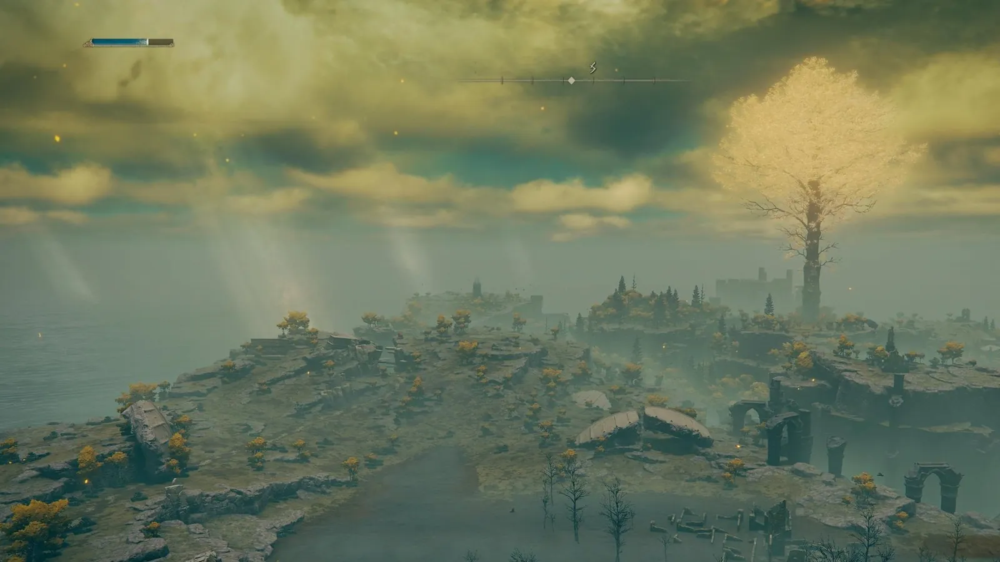
레벨디자인 기획서 · 포트폴리오
엘든 링 림그레이브
레벨디자인 기획서
1부 · 림그레이브의 기본 구조와 장단점
장대규
jdk47888@naver.com
림그레이브는 플레이어를 학습시키며 선별합니다
01 / 20
표지입니다.
자세히 보기
배경은 폭풍 언덕에서 내려다본 림그레이브입니다. 1부는 림그레이브의 기본 레벨디자인 요소를 장단점과 함께 정리하고, 2부는 축복의 인도와 초반 이탈 문제, 개선안을 다룹니다.
들어가며
엘든 링 400시간 · 5회차 후
다시 걸은 림그레이브
5회차를 돌고 튜토리얼 지역을 다시 걸으며, 거대한 세계를 국소 단위로 나누어 플레이어를 이끄는 설계에 주목했습니다.
이 문서의 주장
림그레이브는 플레이어를
학습시키며 선별합니다.
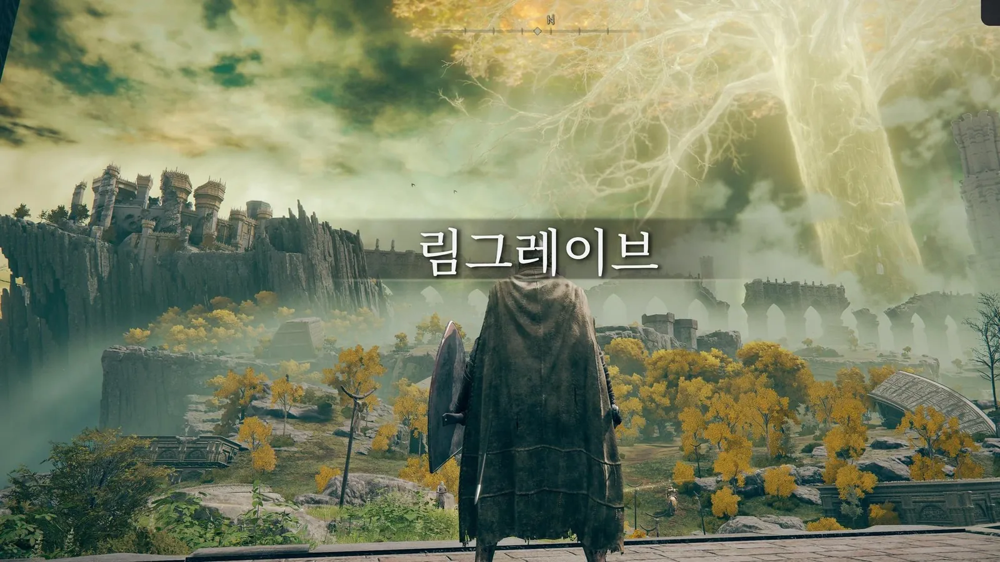
1부 · 기본 구조와 장단점
3단계 단위 · 지도 · 밀도 · 시야 · 인식거리
2부 · 선별의 문제와 개선안
축복의 인도 · 역류 성장 · 초반 이탈 · 개선안 3가지
엘든 링 림그레이브 레벨디자인 기획서 · 들어가며
02 / 20
엘든 링을 약 400시간, 5회차 플레이했습니다.
자세히 보기
다시 걸어 본 림그레이브는 거대한 세계를 국소 단위로 나누어 플레이어를 이끄는 지역이었습니다. 이 문서는 그 구조를 정리하고(1부), 그 구조가 일부 플레이어를 걸러 내는 문제와 개선안을 제시합니다(2부).
1부 림그레이브의 기본 구조와 장단점
림그레이브 개요
설계 목표: 플레이어가 멀기트를 넘을 만큼 성장하는 방법을 스스로 익히게 합니다.
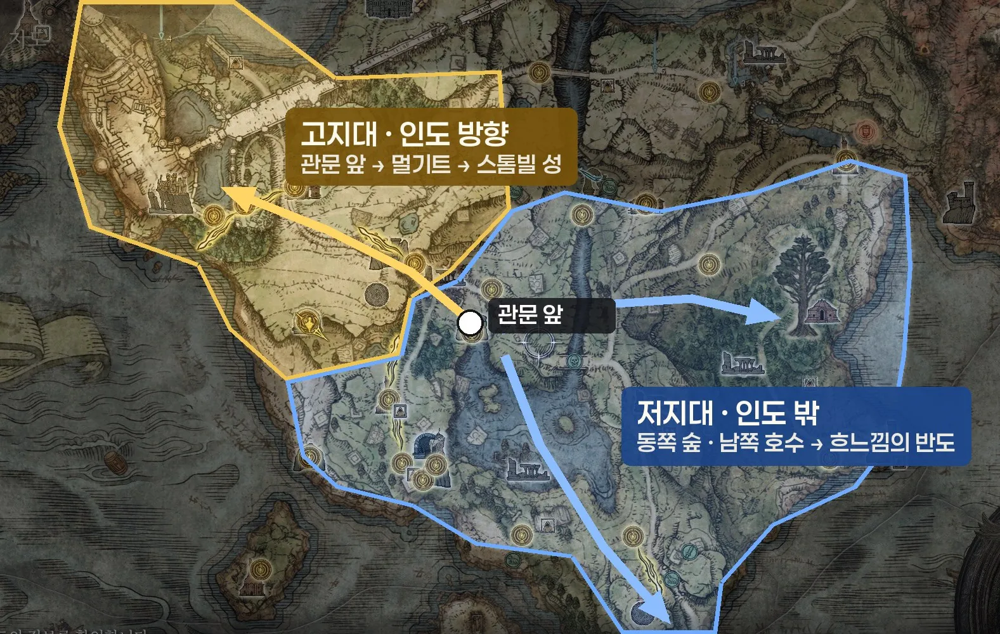
역할 · 튜토리얼 지역
게임을 시작한 플레이어가 처음 도착하는 오픈 필드
관문 · 흉조 멀기트
다음 레거시 던전 스톰빌 성 입구를 막는 첫 관문 보스
인도 방향 · 고지대
축복의 인도는 관문 앞 → 멀기트 → 스톰빌 성을 가리킵니다.
난이도가 높은 적이 모인 경로입니다.
인도 밖 · 동쪽과 남쪽 저지대
고지대를 뺀 동쪽 숲과 남쪽 호수 일대입니다.
탐험할 곳이 많고 비교적 쉬운 보스와 던전이 있습니다.
남쪽으로 흐느낌의 반도가 이어집니다.
엘든 링 림그레이브 레벨디자인 기획서 · 1부 기본 구조
03 / 20
고지대가 곧 강한 적이라는 뜻은 아닙니다.
자세히 보기
축복의 인도가 난이도 높은 적이 모인 곳, 멀기트와 스톰빌 성이 있는 고지대로 플레이어를 이끌 뿐입니다. 반대로 저지대에는 탐험할 곳이 더 많고, 비교적 쉽게 상대할 보스와 던전이 있습니다. 이 차이가 2부의 출발점입니다.
세계를 나누는 3단계 단위
넓은 지역을 거점과 조우 단위로 나누어, 한 번에 하나씩 판단하게 합니다.
지역 · 매크로
림그레이브 전체
목표 하나: 멀기트 돌파
방향: 축복의 인도, 황금 나무와 스톰빌 성 같은 랜드마크
거점 · 메조
교회 · 폐허 · 동굴 · 지하묘지
거점마다 목표와 보상이 하나씩
축복이 구간을 나누어 실패 비용을 줄임
조우 · 마이크로
적 한 무리 · 정예 한 체
인식거리, 공격 예비동작, 회피 시점을 익히는 최소 단위
예시
림그레이브 → 관문 앞 폐허(거점) → 모닥불을 둘러싼 고드릭 병사 한 무리(조우)
장점
세계는 넓어도 한 번에 판단할 범위는 작습니다.
처음 오픈월드를 접한 플레이어도 부담이 적습니다.
단점
단위와 단위 사이, 즉 다음에 어느 거점으로 갈지는 플레이어가 정해야 합니다.
엘든 링 림그레이브 레벨디자인 기획서 · 1부 기본 구조
04 / 20
림그레이브는 지역, 거점, 조우의 세 단위로 나뉩니다.
자세히 보기
지역 단위에서는 목표가 멀기트 하나뿐이고, 거점 단위에서는 거점마다 목표와 보상이 하나씩 있으며, 조우 단위에서는 적 한 무리의 인식거리와 공격을 익힙니다. 단위 사이의 연결, 즉 다음 거점의 선택은 플레이어에게 맡겨져 있습니다. 이 부분이 2부의 문제와 이어집니다.
채우는 지도
지도는 비어 있는 상태로 시작하고, 플레이어가 발견한 것만 기록합니다.
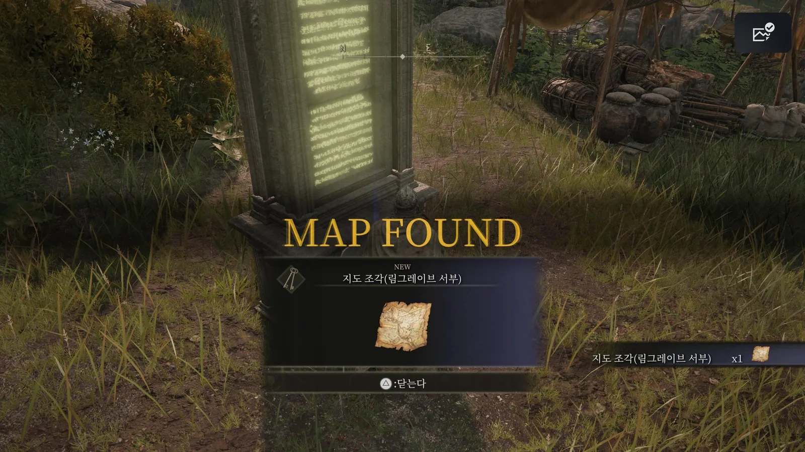
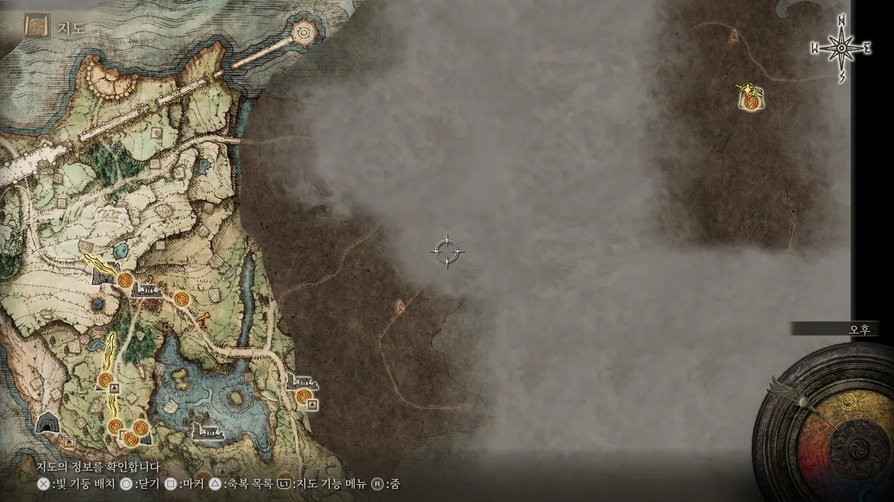
발견
지도 조각 · 축복 · 입구
판단
지금 갈지, 나중에 올지
표시
직접 마커를 찍고 이동
지도 조각은 지형과 큰 지명만 보여 줍니다.
축복과 던전 입구는 직접 찾아야 지도에 남습니다.
장점
지도가 곧 탐험 기록입니다.
마커를 지워 나가는 지도와 달리, 다음 목표를 플레이어가 정합니다.
단점
방문 전에는 마커가 없어 처음 지역에서 막막합니다.
진행도를 확인할 방법이 없습니다.
놓친 장소는 대부분 2회차에서야 알게 됩니다.
출시 후 보완
1.03 패치(2022.3)에서 만난 NPC의 아이콘과 이름을 지도에 기록하는 기능이 추가되었습니다.
엘든 링 림그레이브 레벨디자인 기획서 · 1부 기본 구조
05 / 20
엘든 링의 지도는 채우는 지도입니다.
자세히 보기
지도 조각은 지형만 보여 주고, 축복과 던전 입구는 직접 발견해야 표시됩니다. 장점은 탐험의 기록이 남고 다음 목표를 플레이어가 정한다는 점입니다. 단점은 방문 전에는 아무 마커도 없어 막막하고, 진행도를 확인할 수 없어 무엇을 놓쳤는지 알 수 없다는 점입니다. 출시 후 1.03 패치에서 만난 NPC를 지도에 기록하는 기능이 추가된 것은 개발사도 NPC 누락 문제를 보완한 사례입니다. 출처: 1.03 패치 노트(Dexerto, 2022.3.17).
밀도의 순환
저밀도 필드와 고밀도 던전을 오가는 동안 플레이어가 성장합니다.
필드
던전
필드
던전
필드
멀기트
스톰빌 성
플레이 시간 →
긴장도
성장(던전을 마치고 필드로 나올 때)
필드
적 사이 간격이 넓어 싸울지 피할지 고릅니다.
탐색과 휴식 구간입니다.
던전
좁은 통로에 적이 몰려 있고, 끝에 보스와 성장 보상이 있습니다.
장점
긴장과 이완이 반복되어 피로가 덜 쌓입니다.
단점
처음 가는 곳은 필드도 위험 요소라, 이완 구간이 크게 느껴지지 않을 수 있습니다.
엘든 링 림그레이브 레벨디자인 기획서 · 1부 기본 구조
06 / 20
그래프는 개념도이며 수치는 실측값이 아닙니다.
자세히 보기
필드(저밀도)와 던전(고밀도)이 번갈아 나오고, 긴장도는 던전에서 크게 오르고 필드에서는 조금만 내려갑니다. 처음 가는 필드도 위험 요소이기 때문입니다. 성장은 던전 끝의 보스와 보상을 얻고 필드로 나올 때 계단식으로 오르며, 멀기트를 넘어 스톰빌 성에 들어설 때 한 번 더 오릅니다. 즉 플레이어는 고밀도와 저밀도를 오가는 동안 성장합니다. 단점은 처음 방문하는 지역은 필드라도 위험 요소이므로, 밀도의 순환이 주는 이완이 기대만큼 크지 않을 수 있다는 점입니다.
정보를 주는 시야
지형과 빛으로 갈 곳과 위험을 글 없이 먼저 보여 줍니다.
열린 지형
랜드마크와 적 무리를 멀리서 먼저 보여 줍니다.
접근 경로를 고를 시간을 줍니다.
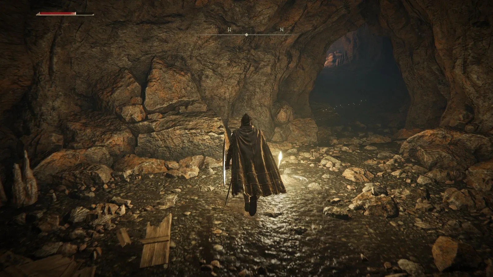
닫힌 지형
동굴과 지하묘지는 시야를 끊어 긴장과 기습을 만듭니다.
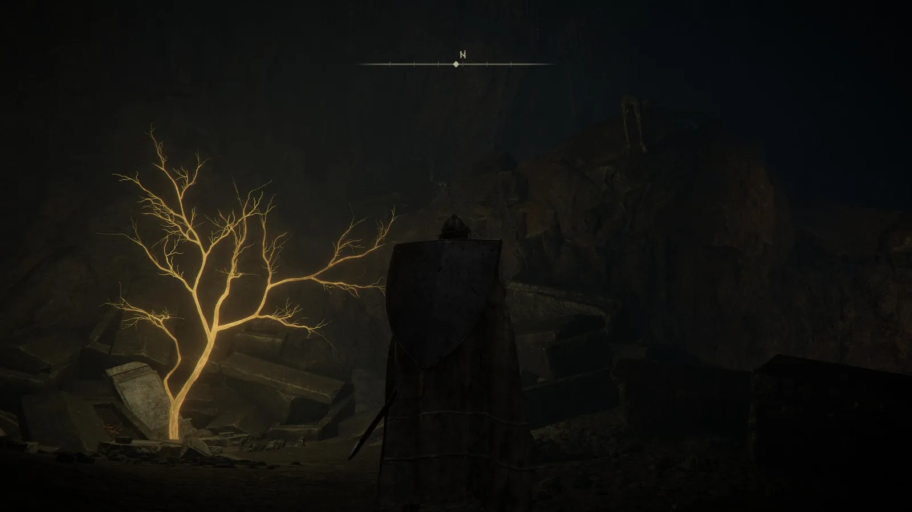
빛
축복, 아이템, 입구를 밝혀 시선을 끕니다.
※ 전투 중의 빛도 정보가 됩니다.
멀기트 2페이즈의 빛나는 무기, 원거리 마법사의 마법, 처치 후 드롭 아이템의 빛이 해당합니다.
장점
텍스트 안내 없이 시선을 유도하므로 탐험의 몰입이 깨지지 않습니다.
단점
밤에만 나타나는 적은 낮의 시야 정보로 미리 알 수 없습니다.
같은 길이 시간대에 따라 다른 위험이 됩니다.
엘든 링 림그레이브 레벨디자인 기획서 · 1부 기본 구조
07 / 20
시야는 레벨디자인의 기본 도구입니다.
자세히 보기
열린 지형은 정보를 먼저 주고, 닫힌 지형은 정보를 끊어 긴장을 만들며, 빛은 시선을 끕니다. 전투 중의 빛(멀기트 2페이즈의 빛나는 무기, 원거리 마법사의 마법, 드롭 아이템의 빛)도 같은 역할을 합니다. 단점은 밤에만 나타나는 적처럼 시간대에 따라 바뀌는 위협은 시야 정보로 미리 알 수 없다는 점입니다.
인식거리를 가르치는 배치
트리가드를 피해 가는 길에서 관문 앞 경계병까지, 적의 인식거리를 순서대로 체득하게 합니다.
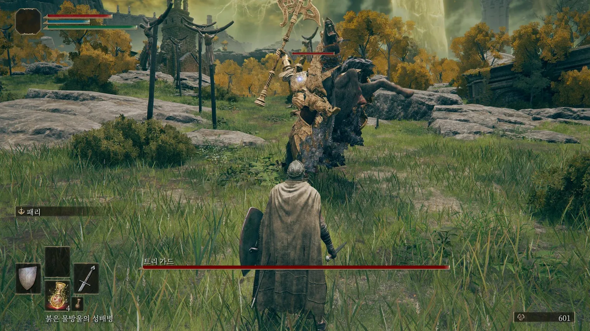
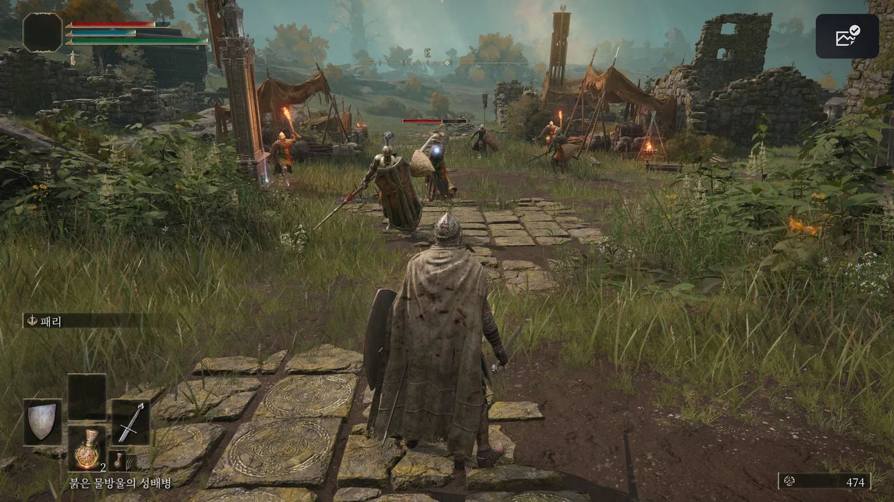
1 · 첫 평원
순찰하는 트리가드 발견
2 · 우회
뒤로 돌거나 멀리 떨어져 지나감
3 · 관문 앞 폐허
경계 근무 중인 고드릭 병사
4 · 체득
어디까지 다가가면 들키는지 익힘
장점
전투 전에 싸울지 피할지 고르는 법을 배웁니다. 피하는 것도 정답이 됩니다.
단점
인식거리가 짧습니다.
초반에 얻는 탈것인 영마 토렌트로 적을 따돌릴 수 있습니다.
전투 없이 고레벨 지역을 지나가며 파밍할 수 있습니다.
엘든 링 림그레이브 레벨디자인 기획서 · 1부 기본 구조
08 / 20
플레이어가 처음 만나는 강적 트리가드는 이기라고 둔 적이 아니라 피해 가라고 둔 적입니다.
자세히 보기
트리가드의 인식거리를 피해 뒤로 돌거나 멀리 떨어져 지나가면, 성벽 앞 관문 쪽 폐허에 고드릭 병사들이 모여 있습니다. 경계 근무를 서는 병사들을 통해 플레이어는 어디까지 다가가면 발견되는지를 체득합니다. 단점은 인식거리가 짧아, 초반에 멜리나에게서 받는 탈것인 영마 토렌트를 활용하면 전투 한 번 없이 도망 다니며 고레벨 지역을 파밍할 수 있다는 점입니다.
1부 정리 · 요소별 장단점
다섯 요소 모두 성장하는 방법은 가르치지만, 성장할 장소는 알려 주지 않습니다.
| 요소 | 설계 목표 | 장점 | 단점 |
|---|---|---|---|
| 3단계 단위 | 한 번에 판단할 범위를 줄임 | 넓은 세계에서도 부담이 적음 | 다음 거점 선택은 플레이어 몫 |
| 지도 | 발견을 기록 | 다음 목표를 플레이어가 정함 | 막막함, 진행도 확인 불가 |
| 밀도 | 긴장과 이완, 성장 보상 | 피로가 쌓이지 않음 | 첫 방문 지역은 필드도 위험 |
| 시야 | 글 없이 정보 제공 | 몰입을 깨지 않는 유도 | 밤에만 나오는 위협은 예측 불가 |
| 인식거리 | 교전 여부를 고르게 함 | 피하는 것도 정답이 됨 | 짧아서 토렌트로 우회 파밍 가능 |
공통 한계
지금 어디로 가야 성장할 수 있는지는 어느 요소도 알려 주지 않습니다.
엘든 링 림그레이브 레벨디자인 기획서 · 1부 기본 구조
09 / 20
1부의 다섯 요소를 설계 목표, 장점, 단점으로 정리했습니다.
자세히 보기
공통점은 모두 성장하는 방법(싸울지 피할지, 어디가 위험한지, 언제 쉬는지)은 가르치지만, 지금 어디로 가야 성장할 수 있는지는 알려 주지 않는다는 점입니다.
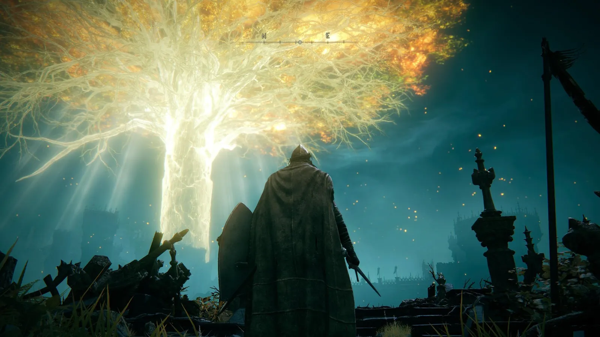
1부를 마치며
림그레이브는 성장하는 방법을 가르칩니다.
다만, 어디서 성장할지는 가르치지 않습니다.
림그레이브는 지도, 밀도, 시야, 인식거리를 통해 플레이어에게 성장 문법을 학습시킵니다.
하지만 역설적이게도, 플레이어를 이끄는 축복의 인도는 성장할 곳이 아닌 가장 어려운 관문을 가리킵니다.
엘든 링 림그레이브 레벨디자인 기획서 · 1부 기본 구조
10 / 20
1부의 결론입니다.
자세히 보기
기본 요소는 성장하는 방법을 가르치지만 성장할 장소는 알려 주지 않고, 축복의 인도는 오히려 가장 어려운 관문을 가리킵니다. 2부는 이 지점이 플레이어를 어떻게 선별하는지, 그리고 어떻게 개선할 수 있는지를 다룹니다.
2부 축복의 인도와 초반 이탈
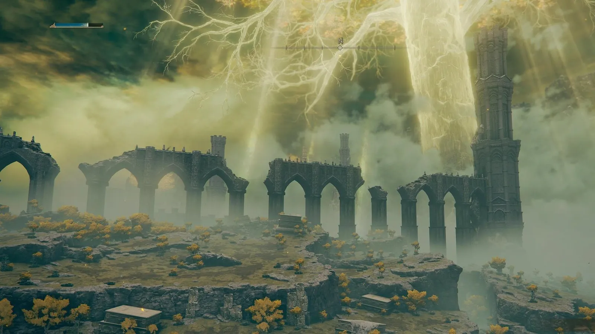
엘든 링 림그레이브 레벨디자인 기획서
2부
학습시키며 선별한다
축복의 인도와 초반 이탈, 그리고 개선안
장대규 · jdk47888@naver.com
11 / 20
2부 표지입니다.
자세히 보기
배경은 축복의 빛줄기가 스톰빌 성 쪽을 가리키는 장면입니다. 2부는 축복의 인도가 만드는 의도된 불합리함, 엘든 링만의 역류 성장, 그로 인한 초반 이탈과 개선안을 다룹니다.
축복의 인도가 가리키는 곳
축복의 인도는 성장할 장소가 아니라 가장 어려운 길을 가리킵니다.
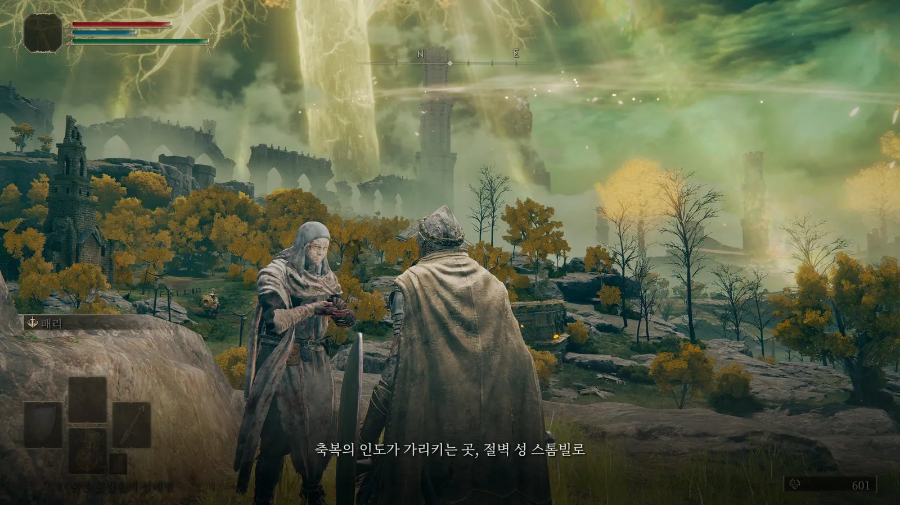
NPC 대사 “축복의 인도가 가리키는 곳, 절벽 성 스톰빌로”
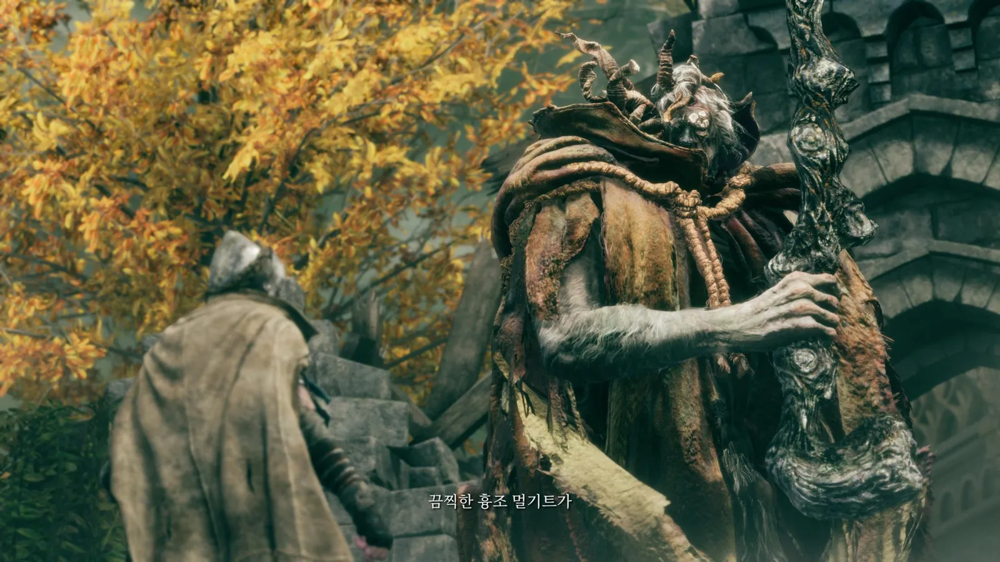
인도의 끝에서 만나는 첫 관문 보스, 흉조 멀기트
인도를 따르는 길
관문 앞 → 흉조 멀기트 → 스톰빌 성. 난이도가 높은 적이 모여 있는 경로입니다.
인도 밖의 길
고지대를 뺀 동쪽과 남쪽 저지대, 그리고 흐느낌의 반도. 탐험할 곳이 많고, 비교적 쉬운 보스와 던전이 있습니다.
엘든 링 림그레이브 레벨디자인 기획서 · 2부 선별
12 / 20
축복의 인도는 대부분의 게임에서 플레이어를 안전하게 다음 목표로 데려가는 장치입니다.
자세히 보기
림그레이브의 인도는 반대로, 플레이어를 난이도가 높은 적이 모인 고지대와 첫 관문 보스 멀기트, 그 너머 스톰빌 성으로 곧장 이끕니다. 반면 인도가 가리키지 않는 저지대와 남쪽에는 탐험할 곳이 많고 비교적 쉬운 보스와 던전이 있습니다. 인도를 그대로 따르면 막히도록 둔, 의도된 불합리함입니다.
역류 성장 · 엘든 링만의 플레이 문법
인도를 따라 나아가려면, 역설적으로 인도를 거슬러 성장해야 합니다.
축복의 인도를 따라 북쪽으로
흉조 멀기트에게 패배
인도만 따르는 플레이어
같은 길로 재도전
반복 패배 → 실력 문제로 받아들이고 이탈
엘든 링이 기대하는 길
인도 반대로,
저지대와 남쪽
던전과 쉬운 보스로 성장
재도전 → 스톰빌 성
장점
자유 탐험이 곧 성장 수단이 됩니다.
스스로 우회로를 찾아 돌파했을 때의 성취가 큽니다.
단점
거슬러 가야 한다는 사실 자체를 게임이 알려 주지 않습니다.
이 문법을 모르는 플레이어는 같은 벽에 반복해서 부딪힙니다.
엘든 링 림그레이브 레벨디자인 기획서 · 2부 선별
13 / 20
엘든 링에서 가장 크고 특이한 지점은 정석적인 흐름을 거스르는 게임플레이입니다.
자세히 보기
축복의 인도를 반드시 따라가는 것이 중요한 것이 아니라, 그 인도를 따라서 나아갈 수 있도록 역설적으로 흐름을 거슬러 성장하는 것이 필요합니다. 일반적인 튜토리얼은 안내를 따르면 성장하고 관문을 통과합니다. 림그레이브는 안내를 따르면 관문에서 막히고, 안내 밖에서 성장해야 통과합니다. 이 문법을 스스로 깨닫는 플레이어는 남고, 깨닫지 못한 플레이어는 걸러집니다.
선별의 지표 · Steam 업적 달성률
Steam 구매자 4명 중 1명은 원탁에 도착하지 못했습니다.
원탁 도착
75.0%
멀기트 처치
70.9%
고드릭 처치
65.1%
엔딩 도달
23.9%
Steam 전체 업적 달성률(2026.10.22 확인). 구매 후 실행하지 않은 계정도 포함됩니다.
원탁은 대부분 멀기트를 넘거나 폭풍 언덕 절벽길을 지나 처음 도착하는 거점입니다.
25.0%
원탁 도착 전에 멈춘 비율
대부분 림그레이브 구간입니다.
3,000만 장
전 플랫폼 누적 출하량(2025.4)
소울라이크 팬층을 넘어선 대중 작품입니다.
저도 첫 회차에는 림그레이브에서 낙오했습니다.
엘든 링 림그레이브 레벨디자인 기획서 · 2부 선별
14 / 20
Steam 전체 업적 달성률 기준입니다(2026년 10월 22일 확인).
자세히 보기
가장 많이 달성된 업적이 원탁 도착(75.0%)이고, 멀기트 처치 70.9%, 고드릭 처치 65.1%, 엔딩(엘든 로드) 23.9%입니다. 구매 후 실행하지 않은 계정도 포함되므로 실제 이탈률보다 높게 잡힐 수 있지만, 가장 큰 감소가 림그레이브 구간에서 일어난다는 점은 분명합니다. 판매량은 2025년 4월 기준 전 플랫폼 3,000만 장 출하입니다(Game Informer). 출처: Steam Global Achievement Stats(app 1245620).
개발사의 대응과 남은 공백
난이도와 보상은 조정했지만, 어디서 성장해야 하는지는 여전히 알려 주지 않습니다.
| 시점 | 조치 | 바꾼 것 | 남은 한계 |
|---|---|---|---|
| 출시 전 | 멀기트 난이도 하향 | 난이도 | 왜 막혔는지, 어디서 준비할지는 알려 주지 않습니다. |
| 2022.3 · 1.03 패치 | 만난 NPC 지도 기록 | 지도 정보 | 이미 만난 NPC만 기록됩니다. 가 보지 않은 성장 장소는 그대로 비어 있습니다. |
| 2022.3 · 1.03 패치 | 단조석 드롭률 상향 | 성장 속도 | 성장할 장소를 찾는 문제는 그대로입니다. |
2부의 핵심
초반 난이도 곡선에는 공백이 있고, 개발사의 조치로도 메워지지 않았습니다.
공백
멀기트 앞에서 막힌 플레이어는
어디서 성장할지 알 수 없음
개발사의 조치
난이도 · 지도 · 성장 속도만 조정
공백은 그대로 남음
이 기획서의 개선안
성장할 곳을 알려 주는 정보를 더함
17~19쪽
엘든 링 림그레이브 레벨디자인 기획서 · 2부 선별
15 / 20
멀기트 하향은 출시 후가 아니라 출시 전에 이루어졌습니다.
자세히 보기
기타오 야스히로 프로듀서는 2022년 2월 인터뷰에서, 네트워크 테스트의 멀기트가 초반 보스로서는 어려운 편이라 조정했다고 밝혔습니다(GamesRadar, GGRecon). 출시 후 1.03 패치(2022년 3월)에서는 만난 NPC의 아이콘과 이름을 지도에 기록하는 기능, 일부 적의 단조석 드롭률 상향이 들어갔습니다(Dexerto, Automaton). 세 조치 모두 난이도, 지도, 성장 속도를 다뤘지만, 인도를 거슬러 다른 곳에서 성장해야 한다는 정보는 다루지 않았습니다. 즉 초반 난이도 곡선의 공백은 출시 후에도 메워지지 않았고, 이 공백이 2부 개선안의 대상입니다.
난이도 완화 장치까지의 공백
완화 장치는 이미 게임에 있지만, 찾아가야만 얻을 수 있습니다.
영체 소환 · 환혼의 종
1. 트리가드를 우회해 관문 앞으로
2. 세 번째 축복에서 멜리나 · 토렌트 획득
3. 엘레의 교회로 돌아가 레나와 만남
4. 환혼의 종 · 낙오된 늑대의 뼛가루
레나를 놓치면 원탁의 상인에게서 사야 합니다.
보스 공략 도구 · 멀기트의 구속구
1. 흐린 강 동굴 발견
2. 패치와 싸운 뒤 살려 줌
3. 패치의 상점에서 5,000룬에 구매
4. 멀기트 1페이즈에서 최대 2회 구속
게임 안에서 이 아이템으로 이끄는 단서가 없습니다.
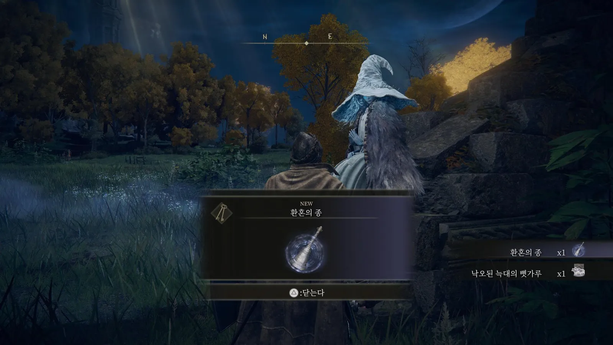
공백
멀기트 앞에서 반복 도전하는 플레이어는 두 장치 모두에 닿지 못합니다. 도움이 가장 필요한 플레이어가 도움에서 가장 멉니다.
엘든 링 림그레이브 레벨디자인 기획서 · 2부 선별
16 / 20
엘든 링에서 난이도를 낮추는 가장 큰 장치는 플레이어 혼자 돌파하는 대신 영체를 소환해 함께 싸우는 시스템입니다.
자세히 보기
그러나 영체를 부르는 환혼의 종은 트리가드를 지나 토렌트를 얻고, 엘레의 교회로 돌아가 레나를 만나야 처음 얻을 수 있습니다. 레나를 놓치면 원탁의 상인에게서 구매해야 합니다. 멀기트의 구속구도 흐린 강 동굴의 패치를 살려 주고 5,000룬에 사야 하며, 게임 안에 이 아이템으로 이끄는 단서는 없습니다. 출처: GameRevolution(환혼의 종), Fextralife · Dexerto(멀기트의 구속구).
2부 문제 정의와 개선안
문제 정의와 개선 원칙
문제는 난이도가 아니라 정보입니다.
문제
플레이어는 멀기트 앞 반복 패배를 실력 문제로 받아들이고 떠납니다.
실제 원인은 준비 부족입니다.
다른 곳에서 더 성장할 수 있다는 정보가 없기 때문입니다.
개선 목표
학습을 더 빠르게, 그리고 내 실력 탓이 아니라는 것을 받아들이게 합니다.
1
난이도는 그대로
적 배치, 보스 능력치, 보상 수치를 바꾸지 않습니다.
2
위험이 아니라 성장 장소를 알림
위험은 죽으면서 어차피 배웁니다.
필요한 정보는 위험하니 다른 곳에서 성장하라는 것입니다.
3
강제하지 않음
길을 막거나 마커를 찍지 않고, 단서만 둡니다. 탐험의 자유는 유지합니다.
기준은 소울라이크 팬이 아니라 대중입니다.
엘든 링은 3,000만 장이 팔린, 더 넓은 층이 플레이하는 작품입니다.
엘든 링 림그레이브 레벨디자인 기획서 · 2부 개선안
17 / 20
소울라이크에 떠먹여 주자는 제안이 아닙니다.
자세히 보기
난이도와 보상은 그대로 두고 정보만 늘려, 플레이어가 더 빠르게 학습하고 자신의 실력 문제가 아니라는 것을 받아들이게 하는 것이 목표입니다. 엘든 링은 대중성을 더 챙긴 작품이고 실제로 더 많은 유저가 플레이하는 게임이므로, 소울라이크 팬의 기준보다 대중성을 위한 기준이 중요합니다.
개선안 · 성장 장소를 알리는 단서 3가지
이미 있는 시스템을 다시 써서, 인도 밖으로 가라는 정보를 더합니다.
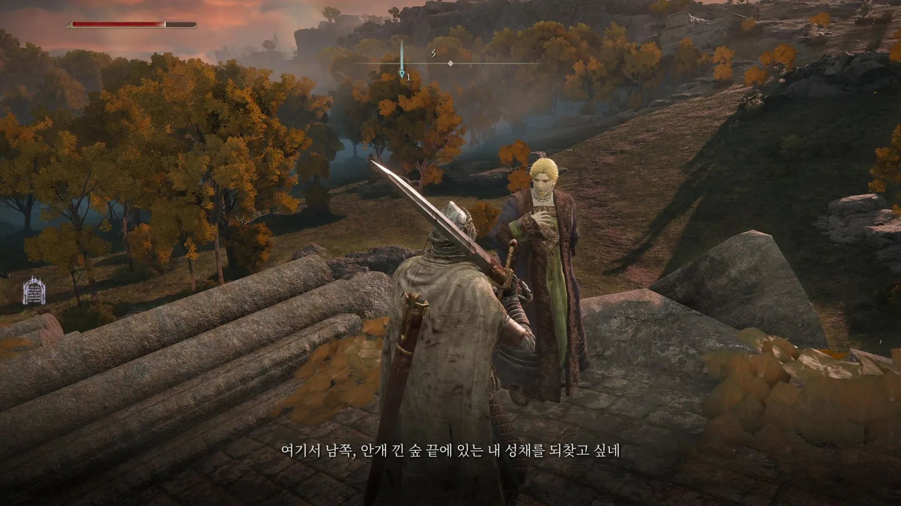
① NPC 단서 대사
예시 · “저 높은 곳의 적은 지금의 그대에게 버겁소. 만반의 준비를 원한다면 남쪽 반도로 내려가 보시오.”
현재 NPC는 장소만 말합니다.
그곳에서 성장할 수 있다는 이유를 더합니다.
멀기트 패배 후 대사가 바뀝니다.
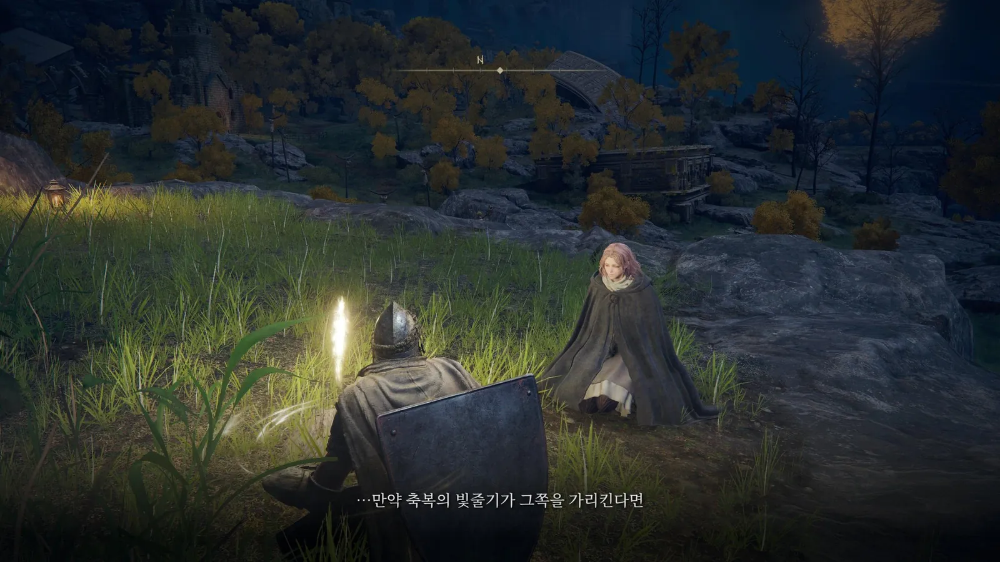
② 보조 인도
멀기트에게 패배한 뒤 축복에서 쉬면, 기존 인도와 함께 저지대와 남쪽을 가리키는 빛줄기 하나를 더 보여 줍니다.
새 UI 없이 기존 인도 시스템을 다시 씁니다.
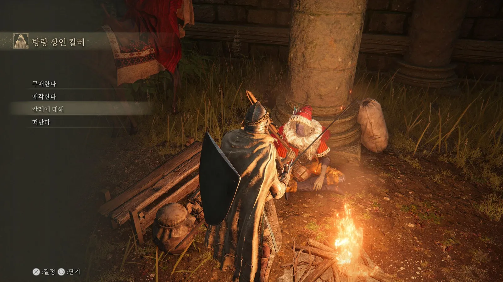
③ 약점 단서
첫 상인 칼레가 멀기트의 구속구와 그것을 파는 흐린 강 동굴의 상인을 언급합니다.
이미 있는 해법으로 가는 길을 연결합니다.
구속구 효과는 그대로입니다.
엘든 링 림그레이브 레벨디자인 기획서 · 2부 개선안
18 / 20
세 개선안 모두 이미 있는 시스템을 다시 씁니다.
자세히 보기
① NPC 단서 대사: 현재 NPC들은 남쪽 숲 끝의 성채나 서쪽 해안의 폐교회처럼 장소는 언급하지만, 그곳에서 성장할 수 있다는 이유는 말하지 않습니다. 멀기트나 트리가드가 위험하니 만반의 준비를 원한다면 흐느낌의 반도로 가 보라는 단서를 더합니다. 예시 대사는 기획 의도를 보여 주기 위한 초안입니다. ② 보조 인도: 인도를 멀기트 방향으로만 쏘지 않고, 패배 후에는 저지대 방향으로도 한 줄기 더 보여 줍니다. ③ 약점 단서: 첫 상인이 멀기트의 구속구의 존재와 판매자를 언급해, 이미 있는 해법으로 가는 길을 연결합니다.
개선안 평가와 효과 측정 기준
세 안 모두 패배한 뒤에만 나타나, 스스로 길을 찾는 플레이어의 경험은 바꾸지 않습니다.
| 개선안 | 기대 효과 | 위험 요소 | 대응 |
|---|---|---|---|
| ① NPC 대사 | 성장할 장소와 이유를 이야기로 전달 | NPC를 만나지 못하면 효과 없음 | 멀기트 앞 축복 근처 NPC에 배치 |
| ② 보조 인도 | 갈 방향을 즉시 보여 줌 | 정답을 알려 주는 느낌, 탐험 자율성 감소 | 패배 후에만, 한 줄기만 표시 |
| ③ 약점 단서 | 이미 있는 해법을 활용 | 보스 공략 체감 난이도 하락 | 구속구 효과는 그대로 유지 |
개선안 적용 후 효과를 확인할 기준입니다.
원탁 도착률 · 멀기트 처치율만 공개 수치가 있고, 나머지는 플레이 로그로 측정합니다.
측정 지표 1
원탁 도착률 · 멀기트 처치율
현재 75.0% · 70.9%에서 상승하는지
측정 지표 2
멀기트 평균 도전 횟수
처치까지의 사망 횟수가 감소하는지
측정 지표 3
패배 후 인도 밖 방문률
흐느낌의 반도 · 저지대 던전 방문이 증가하는지
엘든 링 림그레이브 레벨디자인 기획서 · 2부 개선안
19 / 20
각 개선안의 기대 효과와 위험 요소, 대응입니다.
자세히 보기
세 안 모두 멀기트에게 패배한 뒤에만 나타나므로, 스스로 역류 성장을 깨닫는 플레이어의 경험은 바뀌지 않습니다. 효과는 원탁 도착률과 멀기트 처치율, 멀기트 평균 도전 횟수, 패배 후 인도 밖 지역 방문률로 측정합니다. 아직 적용 전인 제안이므로 검증된 결과가 아니라, 적용 후 확인할 기준입니다. 원탁 도착률과 멀기트 처치율은 Steam 업적으로 공개된 기준값이 있고, 나머지는 플레이 로그로 측정합니다.
결론
엘든 링의 림그레이브는
플레이어를 학습시키고, 선별합니다.
림그레이브는 엘든 링만의 플레이 문법을 학습시키는 곳입니다.
차별적인 시스템으로 플레이어를 인도하지만, 모든 것을 떠먹여 주지는 않습니다.
제시된 개선안으로 더 많은 플레이어가 림그레이브를 졸업하고, 엘든 링의 세계를 누비기를 기대합니다.
장대규 · jdk47888@naver.com
20 / 20
결론입니다.
자세히 보기
림그레이브는 엘든 링만의 플레이 문법을 학습시키는 곳이며, 모든 것을 떠먹여 주지 않기 때문에 플레이어를 선별합니다. 이 기획서의 개선안은 난이도를 그대로 둔 채 성장할 장소에 대한 정보만 더해, 더 많은 플레이어가 림그레이브를 졸업하게 하는 것을 목표로 합니다.